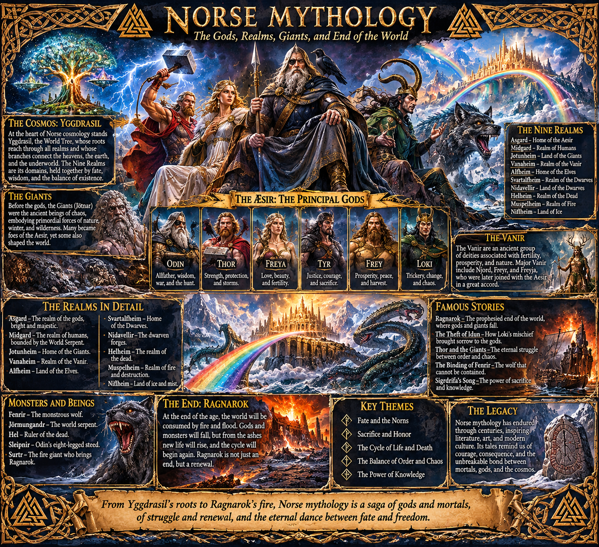

Norse Mythology

NORSE MYTHOLOGY
An Introduction to the Gods, the Nine Worlds, the Giants, Heroes, Monsters, and the Fate of the Cosmos
Norse mythology is the traditional mythological system associated primarily with pre-Christian Scandinavia and the wider North Germanic cultural world. Its surviving stories describe a universe born from opposing forces, inhabited by gods and giants, connected by a vast cosmic tree, and destined to undergo a catastrophic transformation known as Ragnarök.
It is a mythology of cycles, conflict, obligation, fate, memory, courage, and renewal. Its gods are powerful but not omnipotent. They can be deceived, wounded, and killed. They know that the end is coming, yet continue to act. Their greatness is not necessarily the ability to escape fate, but the willingness to confront it.
The surviving sources are not a single unified religious textbook. They include poems, prose, heroic legends, genealogies, and later written accounts preserving traditions that had circulated orally for generations. The most important sources are the Poetic Edda, the Prose Edda of Snorri Sturluson, and the poems and sagas associated with the wider Old Norse literary tradition.
- THE BEGINNING: GINNUNGAGAP AND THE FIRST BEINGS
Before the world existed, there was Ginnungagap: the yawning primordial void.
On one side lay Niflheim, a region of cold, mist, darkness, and ice. At its heart was the spring Hvergelmir, from which numerous rivers flowed. On the opposite side lay Muspelheim, a realm of primordial fire, inhabited or guarded by beings associated with flame and destruction.
When the heat of Muspelheim met the ice of Niflheim in Ginnungagap, the melting frost gave rise to the first living beings.
The first giant was Ymir, also called Aurgelmir. Ymir was not merely a large creature. He was the primordial ancestor of the race of giants, the jötnar.
From Ymir's body, further beings emerged. The primordial cow Auðumbla appeared and nourished Ymir with her milk. Auðumbla herself sustained herself by licking salty ice blocks. As she licked the ice, the shape of a being gradually emerged: Búri, the ancestor of the gods.
Búri had a son named Borr, who married Bestla, a giantess. Their sons were Odin, Vili, and Vé.
These brothers would become the creators of the ordered world.
The death of Ymir
Odin and his brothers killed Ymir. His enormous body became the material from which the world was constructed.
- His flesh became the earth.
- His blood became the seas and waters.
- His bones became mountains.
- His teeth and broken bones became stones and rocks.
- His skull became the sky.
- His brains became clouds.
- Sparks from Muspelheim were placed in the heavens as stars and celestial lights.
The world was therefore not created from nothing. It was formed from the transformed body of a primordial being.
This is one of the central images of Norse cosmology: order emerges through the transformation of an older, chaotic existence.
- THE CREATION OF HUMANITY
After shaping the world, Odin and his brothers encountered two pieces of wood lying on the shore.
From these they created the first human beings.
The first man was Ask, and the first woman was Embla.
The gods gave them different qualities:
- Odin gave them breath or spirit.
- Vili gave them understanding and movement, according to the account preserved in the Prose Edda.
- Vé gave them appearance, speech, hearing, and sight.
The precise distribution of these gifts varies between textual accounts, but the central idea remains: humanity is created through divine participation and endowed with the qualities necessary for life.
The first humans inhabited Midgard, the world established for mortal beings.
- YGGDRASIL: THE COSMIC TREE
Yggdrasil is the immense world tree that connects the cosmos.
It is often described as an ash tree, although its exact physical nature is mythological rather than botanical. Its branches extend over the worlds, and its roots reach into profound regions of existence.
Yggdrasil is not simply a location. It is the structure that connects the different orders of the universe.
Three important roots are associated with three different regions:
- One reaches toward the gods and their sacred assembly.
- One reaches toward the frost giants and the primordial regions.
- One reaches toward Niflheim, near Hvergelmir.
At the root associated with the gods lies the well of Urðarbrunnr, the Well of Urd. There the Norns tend the tree and determine or shape the destinies of beings.
Other important wells include:
- Urðarbrunnr: Associated with the Norns and fate.
- Mímisbrunnr: The Well of Mimir, associated with wisdom and knowledge.
- Hvergelmir: A primordial source of waters and rivers.
Yggdrasil is inhabited by extraordinary creatures.
An eagle lives near its upper reaches. A hawk named Veðrfölnir sits between its eyes. A squirrel named Ratatoskr travels up and down the tree, carrying hostile messages between the eagle and the serpent or dragon Níðhöggr, which gnaws at its roots.
Four stags feed among its branches.
The tree is constantly subject to injury, decay, and the activity of its inhabitants. Yet it continues to endure.
Yggdrasil therefore represents both the interconnectedness and vulnerability of the cosmos.
- THE NINE WORLDS
Norse tradition speaks of nine worlds associated with Yggdrasil. Their exact arrangement is not fully specified in the surviving sources, and modern diagrams often impose a tidy structure that the original mythology does not provide.
The commonly presented nine are:
- Asgard — Realm of the Æsir
The stronghold of the Æsir gods. It contains divine halls, fortifications, and the great hall Valhalla. Asgard is associated with divine authority, warfare, judgment, and the governance of cosmic order.
- Midgard — The Middle Enclosure
The world of humanity. It is surrounded by the sea and protected from the giants by a boundary constructed from Ymir's transformed body. Midgard is the inhabited human world.
- Vanaheim — Realm of the Vanir
The homeland of the Vanir, a group of gods associated with fertility, prosperity, nature, and other powers. The Vanir include Njörðr, Freyr, and Freyja.
- Jötunheimr — Realm of the Giants
The land of the jötnar, frequently translated as giants. These beings are not simply oversized monsters. They are an ancient and diverse class of supernatural beings who can be wise, dangerous, beautiful, foolish, or powerful.
- Álfheimr — Realm of the Elves
Associated with the ljósálfar, or light elves, and sometimes connected with Freyr. The elves are mysterious beings whose precise nature varies across sources.
- Svartálfaheimr / Nidavellir — Realm of Dwarves or Dark Elves
The traditions concerning dwarves, dark elves, and underground realms are complicated. Later interpretations often treat Svartálfaheimr and Nidavellir as interchangeable, but the sources do not provide one universally agreed map.
Dwarves are extraordinary craftsmen who create objects of immense power.
- Muspelheim — Realm of Primordial Fire
The fiery region associated with the fire giant Surtr and the forces that eventually contribute to the destruction of the old world.
- Niflheim — Realm of Mist and Primordial Cold
A region of cold, mist, and primordial waters, associated with the early formation of the cosmos and the source of numerous rivers.
- Hel — Realm of the Dead
A realm associated with the goddess Hel and many of the dead who do not enter the warrior halls of Odin or Freyja.
These worlds should not be imagined as nine planets in a modern astronomical sense. They are mythological regions and orders of existence connected through a cosmic structure.
- THE TWO FAMILIES OF GODS: ÆSIR AND VANIR
Norse mythology describes two major groups of gods.
The Æsir
The Æsir are often associated with sovereignty, war, law, wisdom, and the maintenance of cosmic order.
Their most important members include Odin, Thor, Frigg, Týr, Heimdall, Baldr, and others.
The Vanir
The Vanir are associated with fertility, prosperity, wealth, the natural world, and forms of magic and foresight.
Important Vanir include Njörðr, Freyr, and Freyja.
The Æsir–Vanir War
The two groups fought a major war. The conflict eventually ended through a settlement and exchange of hostages.
Njörðr and his children Freyr and Freyja became associated with the Æsir.
This peace is significant because it establishes that the divine order itself is not originally unified. It emerges through conflict, negotiation, and the incorporation of different powers.
The Æsir and Vanir are not simply good gods and bad gods. They represent different divine traditions and domains that become part of a shared cosmology.
- THE PRINCIPAL NORSE GODS
Odin — The All-Father
Odin is one of the most complex figures in Norse mythology.
He is associated with wisdom, war, death, poetry, prophecy, magic, kingship, and the pursuit of knowledge.
He is not a simple benevolent creator figure. Odin is calculating, inquisitive, unpredictable, and willing to sacrifice greatly to gain knowledge.
He has two ravens:
- Huginn: Thought.
- Muninn: Memory.
They fly throughout the world and return to report what they have seen.
Odin also has two wolves, Geri and Freki, and rides the eight-legged horse Sleipnir.
He sacrificed one of his eyes at Mímisbrunnr in exchange for wisdom. He also hung himself upon Yggdrasil for nine nights, wounded by his own spear, in order to gain knowledge of the runes.
His spear is Gungnir, a weapon that never misses its mark.
Odin's great hall, Valhalla, receives certain warriors who die in battle. Yet his pursuit of knowledge has a darker purpose: he knows that Ragnarök is approaching and seeks to prepare for the final conflict.
Thor — God of Thunder
Thor is the protector of gods and humanity against hostile giants.
He is associated with thunder, strength, storms, fertility, and the protection of the inhabited world.
His principal weapon is Mjölnir, the hammer.
Mjölnir is capable of destroying giants and returning to Thor after being thrown. It is also used in sacred ceremonies and is associated with blessing and protection.
Thor possesses several other remarkable objects:
- Megingjörð: A belt that increases his strength.
- Járngreipr: Iron gloves used to handle Mjölnir.
- Tanngrisnir and Tanngnjóstr: The goats that pull his chariot.
Thor is powerful, direct, and sometimes impulsive. His stories frequently involve journeys into giant territory, contests of strength, and attempts to maintain the boundary between the worlds.
Frigg — Queen of Asgard
Frigg is associated with marriage, motherhood, foresight, and the household.
She is Odin's wife and the mother of Baldr in the principal tradition.
Frigg possesses knowledge of fate but does not reveal everything she knows.
Her attempt to protect Baldr from death becomes one of the most important tragedies in Norse mythology.
Freyja — Goddess of Love, Beauty, and Seiðr
Freyja is one of the most important Vanir goddesses.
She is associated with love, sexuality, beauty, fertility, wealth, magic, and battle.
She possesses the necklace Brísingamen and travels in a chariot drawn by cats.
Freyja is strongly associated with seiðr, a form of magic involving prophecy, altered states, and the manipulation or perception of fate.
She receives a portion of the slain warriors who die in battle. These warriors are taken to her field or hall, Fólkvangr, while Odin receives others in Valhalla.
Freyja is therefore not merely a goddess of romance. She has a powerful relationship with death, warfare, and supernatural knowledge.
Freyr — God of Prosperity and Fertility
Freyr is a Vanir god associated with fertility, peace, prosperity, sunshine, and good harvests.
He is associated with abundance and the successful continuation of life.
Freyr possesses the magical ship Skíðblaðnir, which can be folded up and carried, and the boar Gullinbursti.
He falls in love with the giantess Gerðr. In order to pursue her, he gives away his sword, a decision that becomes important during Ragnarök.
Freyr's story connects desire, prosperity, sacrifice, and the vulnerability of the divine order.
Njörðr — God of the Sea and Wealth
Njörðr is associated with the sea, ships, fishing, wind, wealth, and prosperous travel.
He is the father of Freyr and Freyja.
His marriage to the giantess Skaði is an unusual story about incompatible environments and preferences.
Skaði loves the mountains and winter, while Njörðr prefers the sea and coastal life. They attempt to divide their time between the two environments but cannot find lasting harmony.
Týr — God of Law and Courage
Týr is associated with war, courage, justice, and the binding of oaths.
His most famous story concerns the wolf Fenrir.
When the gods attempt to bind Fenrir, the wolf demands that one of them place a hand in his mouth as a guarantee of good faith.
Týr volunteers.
When Fenrir discovers that the binding is permanent, he bites off Týr's hand.
Týr's sacrifice makes him a symbol of courage and the terrible cost of maintaining order.
Heimdall — Guardian of the Gods
Heimdall guards the bridge Bifröst, which connects Midgard and Asgard.
He possesses extraordinary senses and is said to be able to hear grass growing and see immense distances.
He keeps the horn Gjallarhorn, which he will sound when Ragnarök begins.
He is destined to fight Loki during the final destruction.
Baldr — The Beloved God
Baldr is associated with light, beauty, goodness, and purity.
He is beloved by the gods and begins experiencing dreams that suggest his death.
His mother Frigg attempts to secure protection from every possible object and being in the world.
Almost everything promises not to harm Baldr. The mistletoe is overlooked because it appears too young and harmless.
Loki discovers this weakness and arranges for Baldr's blind brother Höðr to throw a mistletoe weapon at him.
Baldr dies.
His death is one of the great tragedies of Norse mythology and an important sign that the divine order is beginning to fail.
Loki — The Trickster and the Boundary-Crosser
Loki is among the most complicated figures in Norse mythology.
He is associated with deception, transformation, cleverness, mischief, and disruption.
He is not simply an evil god. His actions sometimes rescue the gods from problems that he himself has helped create.
Loki is capable of changing shape and gender. His extraordinary offspring include:
- Fenrir: The monstrous wolf.
- Jörmungandr: The World Serpent.
- Hel: Ruler of the realm of the dead.
Loki is also the mother of Sleipnir, having transformed into a mare and given birth to Odin's eight-legged horse.
After his involvement in Baldr's death, Loki is captured and bound beneath the earth. A serpent drips venom onto his face, while his wife Sigyn attempts to catch it in a bowl.
When the bowl fills and she must empty it, the venom reaches Loki, causing him to writhe. This is traditionally used to explain earthquakes.
At Ragnarök, Loki breaks free and joins the forces opposing the gods.
Hel — Ruler of the Dead
Hel is Loki's daughter and the ruler of the underworld realm bearing her name.
She governs many of those who die from sickness, old age, and causes other than battle.
Her realm is not necessarily equivalent to the Christian concept of Hell. It is a place of the dead, not a universal destination for morally wicked people.
Hel is described as having a divided appearance, partly living and partly corpse-like.
She refuses to release Baldr unless all things in the world weep for him. One being refuses, and Baldr remains among the dead until the events associated with Ragnarök and the renewed world.
Idunn — Keeper of the Apples
Idunn is associated with youth and renewal.
She keeps the apples that preserve the gods' youth.
When she is abducted by the giant Þjazi, the gods begin to age. Loki is forced to retrieve her.
Her story makes renewal a literal requirement for the continued vitality of the divine community.
- THE GIANTS: JÖTNAR
The jötnar are frequently translated as giants, but this translation can be misleading.
They are an ancient class of supernatural beings associated with primordial forces, wild landscapes, enormous power, and knowledge beyond the ordinary boundaries of the gods.
They can be enemies, ancestors, lovers, teachers, and relatives of the gods.
The distinction between gods and giants is not a simple distinction between good and evil.
Some gods descend from giants. Odin himself has a giantess mother. Several gods marry giantesses.
The giants often represent powers that existed before the gods established their ordered world.
Important giant figures include:
- Ymir: The primordial giant whose body became the world.
- Þjazi: The giant who abducts Idunn.
- Skaði: A giantess associated with mountains, hunting, and winter.
- Gerðr: The giantess who becomes Freyr's wife.
- Hrungnir: A giant who challenges Thor.
- Surtr: The fire giant who leads destructive forces at Ragnarök.
- Thrym: The giant who steals Thor's hammer.
- Útgarða-Loki: A giant ruler associated with illusion and impossible contests.
The giants are not merely external threats. They are part of the same cosmic ancestry and structure as the gods.
- THE DWARVES, ELVES, AND OTHER BEINGS
Dwarves
Dwarves are master craftsmen and metalworkers who create extraordinary objects.
They are associated with underground regions, stone, metal, hidden knowledge, and magical craftsmanship.
Among their creations are:
- Mjölnir: Thor's hammer.
- Gungnir: Odin's spear.
- Draupnir: Odin's magical ring, which produces additional rings.
- Skíðblaðnir: Freyr's magical ship.
- Gullinbursti: Freyr's golden-bristled boar.
- Brísingamen: Freyja's necklace.
- Gleipnir: The magical binding used to restrain Fenrir.
The creation of these objects is often connected to contests, bargains, insults, or dangerous wagers.
The dwarves demonstrate that craftsmanship itself can be a supernatural power.
Elves
The elves are mysterious beings associated with beauty, fertility, light, and the supernatural.
The sources distinguish between light elves and dark elves in some passages, but the precise boundaries between elves, dwarves, and other supernatural beings are not always clear.
Valkyries
The Valkyries are supernatural female figures associated with battle and the selection of the slain.
They choose certain warriors who die in combat and bring them to the halls of the gods.
They are often associated with Odin, Valhalla, and the preparation of the dead for Ragnarök.
They are not simply decorative warrior maidens. They participate in the organization of death and the fate of the divine world.
Norns
The Norns are powerful figures associated with destiny.
The most famous three are:
- Urðr: What has become, often interpreted as the past.
- Verðandi: What is becoming, often interpreted as the present.
- Skuld: What shall be or what is owed, often interpreted as the future.
These are useful interpretations of their names, although the mythology does not reduce them to a simple three-part clock.
The Norns tend the world tree and shape the destinies of beings.
Fate is not merely a prediction. It is a force woven into the structure of existence.
- THE MONSTERS AND COSMIC THREATS
Fenrir
Fenrir is the monstrous wolf, offspring of Loki and the giantess Angrboða.
The gods fear his growth and attempt to bind him.
Ordinary chains cannot hold him. The dwarves therefore create Gleipnir, a magical ribbon made from impossible ingredients, including the sound of a cat's footsteps and the roots of a mountain.
Fenrir agrees to be bound only if one of the gods places a hand in his mouth.
Týr does so.
When Fenrir discovers the deception, he bites off Týr's hand.
At Ragnarök, Fenrir breaks free and kills Odin before being killed by Odin's son Víðarr.
Jörmungandr — The World Serpent
Jörmungandr is another child of Loki.
The gods cast the serpent into the ocean surrounding Midgard. It grows so enormous that it encircles the entire world and grasps its own tail.
It represents an immense boundary around the inhabited world.
Thor and Jörmungandr are destined enemies.
At Ragnarök, Thor kills the serpent but walks only nine steps before collapsing from its venom.
Níðhöggr
Níðhöggr is a monstrous serpent or dragon that gnaws at the roots of Yggdrasil.
It is associated with decay, the underworld, and the continual vulnerability of the cosmic structure.
Garmr
Garmr is a fearsome hound associated with Hel and the events of Ragnarök.
Its exact relationship to other monstrous wolves and dogs varies between textual traditions.
Surtr
Surtr is the fire giant associated with Muspelheim.
During Ragnarök, he advances with the forces of fire and destruction. His flaming weapon or sword contributes to the burning of the world.
The Midgard Serpent, Fenrir, and Surtr
These three figures represent different dimensions of cosmic catastrophe:
- Fenrir destroys the divine ruler.
- Jörmungandr poisons the world and kills Thor.
- Surtr brings the consuming fire.
Their role is not merely to create a battle. They participate in the destruction of the existing cosmic order.
- THE AFTERLIFE: VALHALLA, FÓLKVANGR, AND HEL
Norse mythology does not describe one single destination for every dead person.
Different forms of death and different divine associations lead to different destinations.
Valhalla
Valhalla is Odin's great hall.
Certain warriors who die in battle are selected by the Valkyries and brought there.
They feast, fight, recover, and prepare for Ragnarök.
Their daily combat is not meaningless. They are being gathered for the final struggle.
Fólkvangr
Fólkvangr is the field associated with Freyja.
Freyja receives a portion of the warriors who die in battle.
This is important because Odin does not receive every battle-dead warrior. Freyja has her own claim and authority over the slain.
Hel
Hel is the realm governed by the goddess Hel.
It receives many of the dead who do not enter the warrior afterlife.
It should not be equated directly with Christian Hell. The realm is part of the Norse cosmological geography of death, not simply a place of punishment.
Other forms of afterlife
Some traditions associate particular dead with burial mounds, ancestral locations, or other destinations.
The surviving evidence is varied, and the afterlife should not be reduced to one rigid system.
- THE GREAT STORIES OF NORSE MYTHOLOGY
The Theft of Thor's Hammer
The giant Thrym steals Mjölnir and demands Freyja as his bride in exchange for returning it.
Freyja refuses.
Loki devises a plan: Thor will disguise himself as Freyja and attend the wedding.
Thor is dressed in bridal clothing, while Loki accompanies him as a servant.
The giants become suspicious of the bride's enormous appetite and burning eyes. Loki explains the behavior away as the result of intense longing and fasting.
When Mjölnir is brought out for the wedding ceremony, Thor grabs it and destroys the assembled giants.
The story is comedic, but it also reveals how identity, disguise, social roles, and violence interact in Norse myth.
The Binding of Fenrir
The gods recognize that Fenrir will become dangerous.
They attempt to restrain him, but every chain breaks.
The dwarves produce Gleipnir, a ribbon that appears delicate but is stronger than iron.
Fenrir suspects deception and demands a guarantee.
Týr places his hand in the wolf's mouth.
The gods bind Fenrir, and Týr loses his hand.
The story is about trust, sacrifice, and the terrible cost of preserving order through coercion.
The Mead of Poetry
The gods and Vanir make peace and create a being named Kvasir.
Kvasir is so wise that he can answer any question.
He is eventually killed by dwarves, who mix his blood with honey to create the Mead of Poetry.
Whoever drinks it gains poetic inspiration and extraordinary wisdom.
The mead is later stolen by the giant Suttungr and guarded by his daughter Gunnlöð.
Odin disguises himself, gains access to the mead, and eventually escapes with it.
The story explains poetic inspiration as something precious, dangerous, and difficult to obtain.
The Death of Baldr
Baldr's dreams foretell his death.
Frigg obtains promises from almost everything in existence that it will not harm her son.
Mistletoe is overlooked.
Loki discovers this and gives a mistletoe weapon to Höðr, Baldr's blind brother.
Höðr throws it, and Baldr dies.
The gods attempt to retrieve him from Hel. Hel agrees to release him if everything in the world weeps for him.
Nearly everything does.
One figure refuses.
Baldr remains among the dead.
His death is a turning point in the mythology. It signals that the gods are no longer able to protect everything they love.
Thor's Journey to Útgarða-Loki
Thor and Loki travel to the realm of the giant Útgarða-Loki.
They are challenged to several contests.
Thor attempts to drink from a horn but cannot empty it. He tries to lift a cat but cannot raise it fully. He wrestles an old woman and loses.
Later, the giant reveals that the challenges were illusions concealing cosmic forces.
The drinking horn was connected to the ocean. Thor's drinking caused the sea level to fall.
The cat was actually Jörmungandr, the World Serpent.
The old woman was old age itself.
Thor did not fail because he was weak. He was confronting forces that no ordinary being could overcome.
The story explores the limits of strength and the difference between appearance and reality.
Odin's Sacrifice for the Runes
Odin hangs himself on Yggdrasil for nine nights, wounded by a spear and deprived of food and drink.
He sacrifices himself to himself.
At the end of this ordeal, he discovers the runes.
The runes are not merely an alphabet in this story. They are connected with knowledge, power, and the ability to perceive or influence the hidden structures of existence.
The Building of Asgard's Wall
A mysterious builder offers to construct a wall around Asgard in exchange for extraordinary payment.
The gods agree under conditions they believe impossible to satisfy.
The builder's horse, Svaðilfari, proves unexpectedly powerful.
Loki transforms into a mare to distract the horse, resulting in the birth of Sleipnir.
The wall is completed, but the builder's identity is revealed, and Thor kills him.
The story illustrates divine bargaining, cleverness, deception, and the unexpected consequences of agreements.
- RAGNARÖK: THE FATE OF THE GODS
Ragnarök is the great catastrophe at the end of the present cosmic order.
The word is commonly interpreted as the fate or doom of the gods, though the related expression Ragnarøkkr has also been associated with the twilight of the gods.
The events begin with signs of approaching destruction.
There will be a terrible winter called Fimbulvetr, lasting through successive seasons without the normal renewal of summer.
Social bonds collapse. Conflict spreads. The world becomes unstable.
The wolves associated with the heavens consume the sun and moon. The stars disappear.
The earth trembles.
Fenrir breaks free. Jörmungandr rises from the sea. Loki escapes his bonds. The dead and the forces of chaos gather.
The fire giant Surtr advances.
Heimdall sounds Gjallarhorn, calling the gods to their final battle.
The final battles
The gods meet their destined opponents.
- Odin fights Fenrir and is swallowed.
- Víðarr kills Fenrir in revenge.
- Thor kills Jörmungandr but dies from its venom after taking nine steps.
- Freyr fights Surtr and falls, having surrendered his magical sword earlier.
- Týr and Garmr kill one another.
- Heimdall and Loki kill one another.
The world is consumed by fire.
The established order collapses.
The world after Ragnarök
Yet the mythology does not end with total annihilation.
The earth rises again from the sea, green and renewed.
Some gods survive or return.
Víðarr and Váli endure. Thor's sons Móði and Magni inherit Mjölnir. Baldr and Höðr return from the realm of the dead.
Two human beings, Líf and Lífþrasir, survive by hiding in a protected place associated with the world tree.
They become the ancestors of a renewed humanity.
The new world is fertile and beautiful.
Ragnarök is therefore both an ending and a beginning.
It is not simply a story about the triumph of destruction. It is a story about the destruction of one order and the possibility of another.
- THE RUNES, MAGIC, AND SEIÐR
The runes
The runes were used as writing symbols among Germanic peoples.
The best-known early runic system is the Elder Futhark, consisting of 24 characters.
The name Futhark comes from the sounds of its first six runes.
Runes were used for inscriptions on stone, wood, metal, and other materials. They could identify people, commemorate the dead, mark possessions, or communicate messages.
In mythology and later magical traditions, runes are also associated with wisdom, divination, and supernatural power.
It is important to distinguish historical runic writing from later occult systems. The mythological significance of runes is real as part of the literary tradition, but modern rune divination systems should not automatically be projected backward as unchanged ancient practice.
Seiðr
Seiðr was a form of magic or ritual practice associated with prophecy, altered perception, and influencing events.
Freyja is strongly associated with it, and Odin learns its practice.
The surviving accounts suggest that seiðr could involve trance-like states, ritual performance, and forms of supernatural knowledge.
The exact historical practice is difficult to reconstruct.
Galdr
Galdr refers to forms of incantation or magical chanting.
It is associated with spoken or sung words used to produce an intended effect.
The mythology frequently treats knowledge, words, names, and songs as powers capable of changing the world.
- THE PHILOSOPHY OF NORSE MYTHOLOGY
Norse mythology is especially interesting because its gods are not beyond fate.
They know the future, or at least parts of it, but knowledge does not necessarily grant escape.
Odin seeks wisdom because he knows the catastrophe is coming. Thor protects the world despite the knowledge that he will die. Týr sacrifices his hand to bind Fenrir. The gods continue to act even when the ultimate outcome is known.
Several important concepts emerge.
Fate and necessity: The Norns shape the destinies of gods and humans. Fate is woven into existence, and even divine power has limits.
Wisdom through sacrifice: Odin loses an eye and endures suffering to gain knowledge. Wisdom is not free; it requires transformation and cost.
Order and chaos: The gods establish a habitable world from primordial matter, but the forces that threaten that order are part of the same cosmic inheritance.
Courage in the face of inevitability: The gods do not become insignificant because they are mortal. Their courage becomes meaningful precisely because they cannot guarantee victory.
Reciprocity and obligation: Oaths, bargains, hospitality, kinship, and exchange are powerful social and cosmic forces. Breaking an agreement can have consequences far beyond the immediate participants.
Memory and identity: Odin's ravens, the ancestral world, the runes, and the preservation of stories all emphasize the importance of remembering.
Renewal through destruction: Ragnarök destroys the old world, but life continues. The future is not simply a repetition of the past; it emerges from its remains.
The limits of power: Thor cannot lift the disguised World Serpent. Odin cannot prevent his own death. The gods are mighty, but reality is larger than any individual power.
- NORSE MYTHOLOGY AND ITS HISTORICAL SOURCES
The surviving mythology was preserved through sources written at different times and under different cultural conditions.
The Poetic Edda
The Poetic Edda is a collection of Old Norse mythological and heroic poems preserved in medieval manuscripts.
Important poems include:
- Völuspá: The prophecy of the seeress, describing creation, the gods, Ragnarök, and renewal.
- Hávamál: Sayings attributed to Odin, containing advice about wisdom, conduct, hospitality, and knowledge.
- Vafþrúðnismál: A contest of knowledge between Odin and the giant Vafþrúðnir.
- Grímnismál: A poem containing cosmological and mythological information.
- Skírnismál: The story of Freyr's desire for Gerðr.
- Hymiskviða: A story involving Thor and the giant Hymir.
- Þrymskviða: The theft of Thor's hammer.
- Lokasenna: Loki's verbal confrontation with the gods.
- Baldrs draumar: Dreams and prophecy concerning Baldr's death.
The Prose Edda
The Prose Edda was written by Snorri Sturluson in thirteenth-century Iceland.
It is an essential source for understanding Norse mythology, especially because it explains poetic references and preserves many stories.
However, it was written in a Christian society centuries after the conversion of Iceland. Its author was preserving and organizing older traditions, not documenting an untouched prehistoric religious system.
The Sagas
The Icelandic sagas preserve heroic, legendary, and family traditions.
Some include supernatural events and references to older religious beliefs.
The Völsunga saga is especially important for heroic mythology, including Sigurd, the dragon Fáfnir, and the cursed treasure.
Archaeology and inscriptions
Archaeological evidence, picture stones, rune stones, burial sites, and material objects provide additional insight into the religious and cultural world of pre-Christian Scandinavia.
They do not always match the literary accounts directly. The mythology varied across regions and centuries.
- A CHRONOLOGICAL PATH THROUGH THE MYTHOLOGY
A useful way to study Norse mythology is to follow its cosmic narrative:
- The primordial void: Ginnungagap, Niflheim, and Muspelheim.
- The first beings: Ymir, Auðumbla, and Búri.
- The rise of the gods: Odin, Vili, and Vé.
- The formation of the world: Ymir's body becomes the cosmos.
- The creation of humanity: Ask and Embla.
- The establishment of the divine order: Asgard, Midgard, Yggdrasil, and the Nine Worlds.
- The divine families: Æsir, Vanir, and their conflict.
- The age of gods and giants: Thor's journeys, Odin's sacrifices, and Loki's schemes.
- The death of Baldr: The beginning of the final unraveling.
- The binding of Loki and Fenrir: The gods attempt to delay their fate.
- Ragnarök: The destruction of the old cosmic order.
- The renewed world: The return of life, surviving gods, and humanity's continuation.
CONCLUSION: A COSMOS THAT KNOWS IT WILL END
Norse mythology presents a universe that is alive, interconnected, and temporary.
Its creation begins with opposing primordial forces. Its world is constructed from the body of an ancient being. Its divine families are joined through conflict and exchange. Its cosmic tree connects worlds while suffering continual damage. Its gods pursue wisdom, defend their boundaries, make mistakes, and face the consequences of their actions.
The giants are not simply evil, the gods are not invulnerable, and the dead do not all share one destination. Even the final destruction is not absolute.
The central tragedy of the mythology is that the gods know their fate and cannot completely escape it.
The central hope is that the world can still begin again.
From Ginnungagap to Yggdrasil, from Odin's sacrifice to Ragnarök, Norse mythology explores a profound question:
If every order is temporary, what makes it worth defending?
Its answer is found in courage, wisdom, loyalty, memory, and the possibility of renewal.
The gods may fall. The world may burn. But life can rise again.